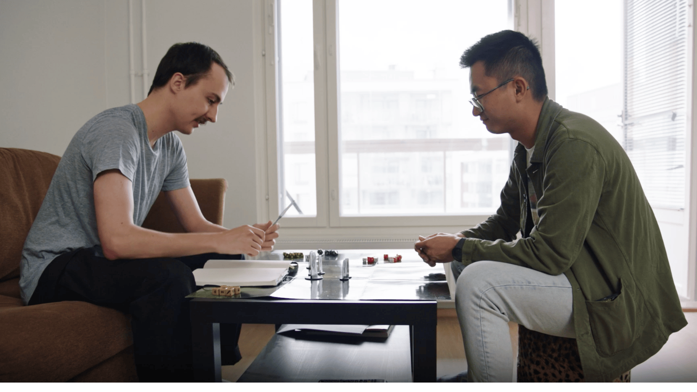
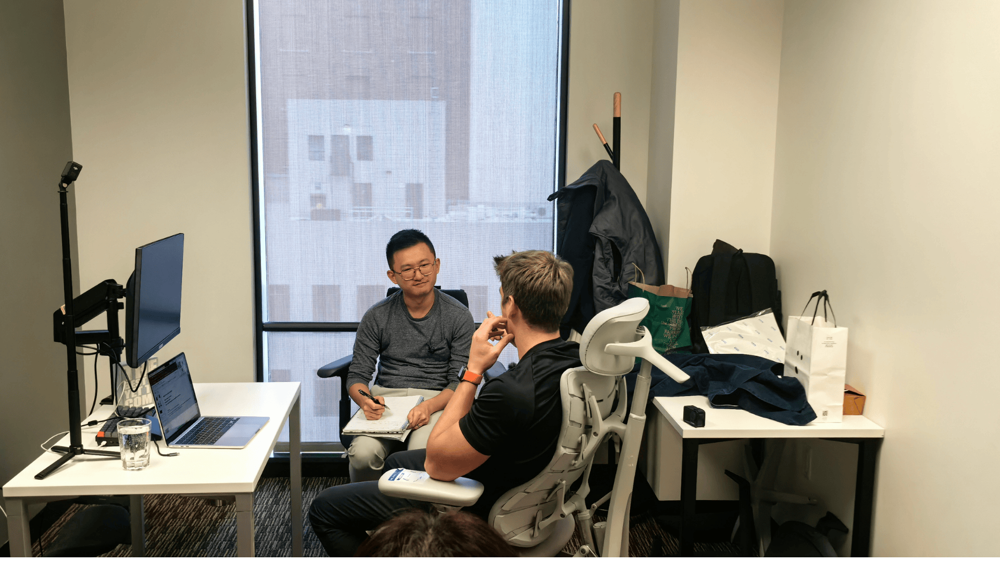
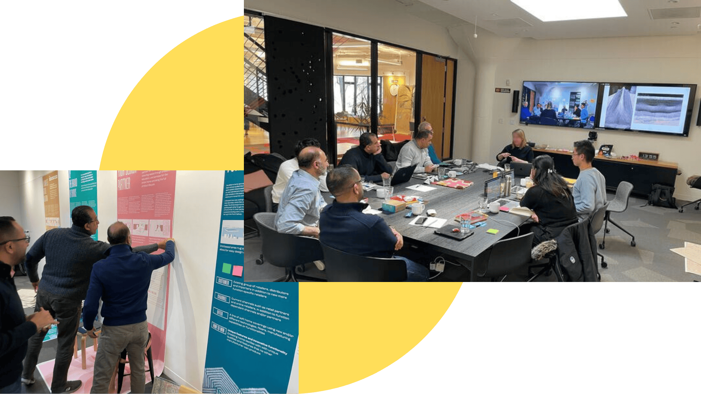
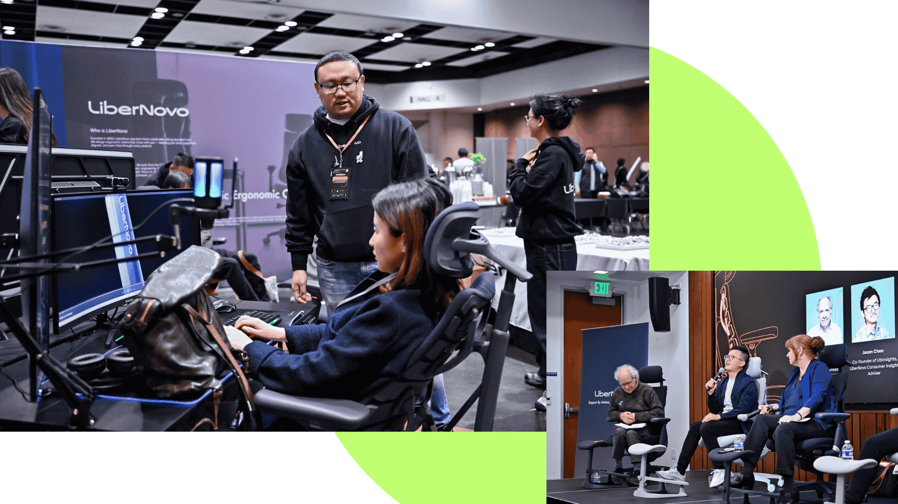

Research expertise you don't have to second guess.
We go beyond borders to find the voices that matter. Through in-house teams and trusted global partners, we engage people with lived experience, cultural fluency, and a story to tell—so you get data with depth and insight with impact.

Our Services

PARTICIPANT RECRUITMENT
We don't fill quotas—we find fits.
Great participants are engaged, articulate, and insightful. Our double-screened, purpose-built approach ensures you get the right people, every time.
Transparency. Quality. Results.
- Custom screeners aligned to your research objectives
- Two-step evidence-based screening for quality assurance
- Only pay for participants who truly fit your study

RESEARCH ACTIVATION
We handle the logistics, so you get relevant data for your research - collected in the format you need, delivered ready for insight.
Multi-city fieldwork to fast-turn sprints—we bring structure, care, and clean data to every study.
What we handle:
Research Localization • Qualitative & Quantitative Research • Foresight & Trend Analysis • Product & Design Research • Expert Panels • Facilitation & Workshops • And more
Why it feels different:
Data built for your workflow. Execution you can trust. Every project, every time.

STRATEGIC FUTURES
Move beyond what they say. Find what it means.
Cultural context + behavioral analysis = actionable insights on what's next.
Our toolkit: Societal & Economic Analysis • Culture Deepdive • Consumer Behavior • Opportunity Roadmap • Competitive & Industry Analysis • More
Why it feels different:
From real-time insights to team alignment - every step is designed for action.

BRAND ACTIVATION
From insights to impact.
We don't just research your brand—we amplify it. Strategic storytelling, live activation, keynote delivery. We're there every step, turning what we discover into what moves markets.
What we bring: Strategic Storytelling • Product Positioning & Demos • Event Activation • Keynote Development & Delivery • In-Person Leadership • Campaign Activation • More
Why it feels different:
Research-backed stories with hands-on guidance for every step of your product journey.
See our work
See our capabilities in the real world.